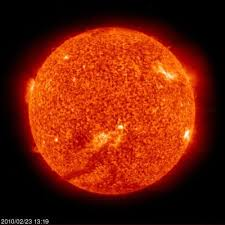

Sol

El Sol, es la fuente de luz y energía que brilla en lo alto del cielo,
nos da calor y broncea nuestra piel, tiene la particularidad de ser la estrella
luminosa que más cerca está de la Tierra. Se formó, según los expertos, hace alrededor
de 4.500 millones de años y se destaca por ser el eje central de nuestro sistema
planetario, ya que la Tierra y otros cuerpos celestes orbitan alrededor de él.